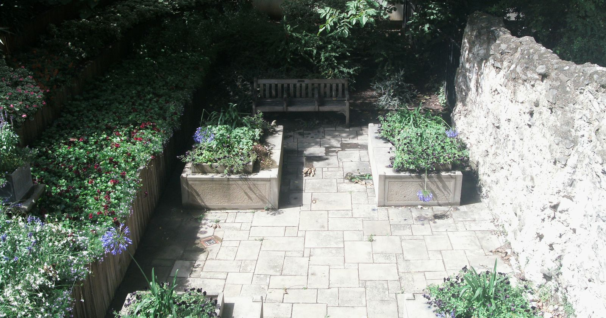
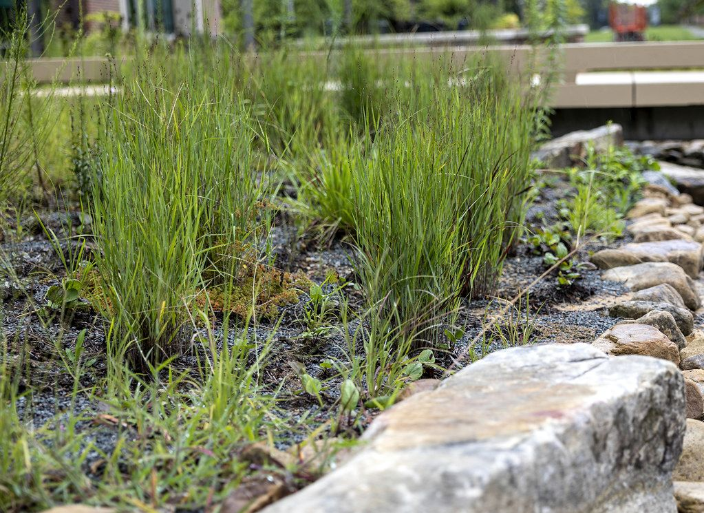
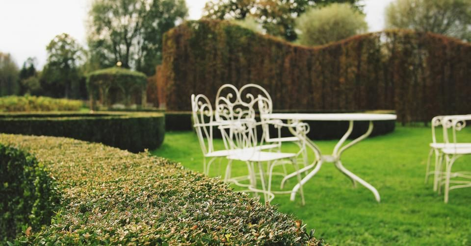
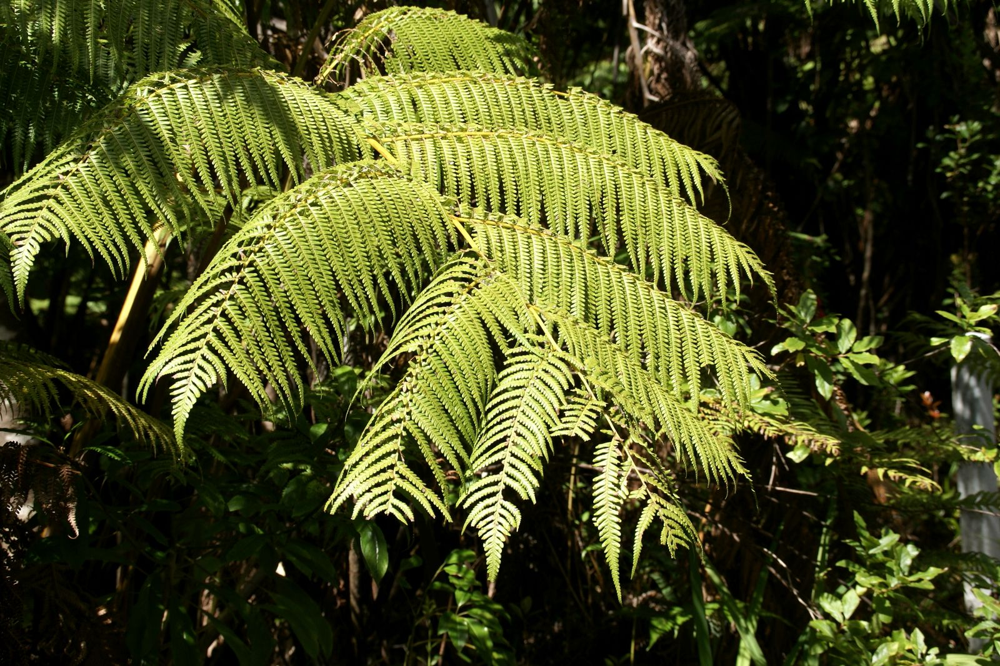

Landscaper in Nelson · owner-run by Aroha
Gardens built for the Nelson sun, and the clay beneath it.
Garden design, planting, retaining, lawns, paving and native gardens across Nelson, Stoke and Richmond. One small crew, the same faces from first sketch to last barrow of bark.

Courtyard garden, summer.
Average Google rating, from every review we've had so far.
Reviews from Nelson and Tasman homeowners. Three of them are below.
Things we do, from a full design to a spring tidy of the hedges.
What we do, start to finish.
Take one job or the whole garden. Every quote is free, done on site, and written down so you know what you're paying for before a spade goes in.
Garden design
A drawn plan to scale, with plants that suit your soil, sun and how you use the yard.
Planting
Beds dug, fed and mulched, then planted at the right spacing, not crammed for the photo.
Retaining & edging
Timber, block and stone walls under 1.5 m, and clean edges between lawn and bed.
Lawns
New lawns sown or rolled out, tired ones levelled, top-dressed and oversown.
Paving
Paths, patios and stepping stones, laid on a proper base so they stay flat.
Hedges & pruning
Hedges clipped square, fruit trees and natives pruned at the right time of year.
Native gardens
Harakeke, hebe, pittosporum and kōwhai that bring the tūī back and need little water.


We plant for the garden you'll have in five years, not the one in the photo.
Nelson gets more sun than most of the country and plenty of hard clay underneath. So we dig it, feed it, choose plants that like it here and space them for their full size. Less watering, less replanting, fewer surprises.
Book a free garden visit
The right job in the right month.
We book the year around the weather. Shaded months are the best time to plant, sow or prune; the rest is good for paving, walls and design.
- Hours
- Monday to Friday, 7:30 am – 4:30 pm
- Quotes
- Free, on site, usually within the week
- Based in
- Stoke, Nelson
- Green waste
- Taken away, nothing left on the berm
From 31 reviews.
What Nelson and Tasman customers have said on Google. Names shortened to first names.
“Aroha turned our bare clay bank into a native garden in two weeks. A year on, the harakeke are huge and the tūī are back.”
“Quote came in writing the day after she visited and the final bill matched it to the dollar. The new patio hasn't moved through a wet winter.”
“They do our hedges twice a year now. Always turn up when they say and take every clipping away with them.”
Nelson, Stoke, Richmond and around the bay.
We work within about 30 minutes of our yard in Stoke. Further out? Ask anyway; for a bigger job we'll often make the trip.
- Nelson city
- Atawhai
- Tāhunanui
- Stoke
- Richmond
- Brightwater
- Māpua
- Wakefield
Talk to Aroha
Tell us about your garden.
Call or text any time. If we're up to our elbows in a garden bed, we'll call you back the same day.
021 000 0000- Hours
- Mon to Fri, 7:30 am – 4:30 pm
- Area
- Nelson, Stoke, Richmond, Tasman